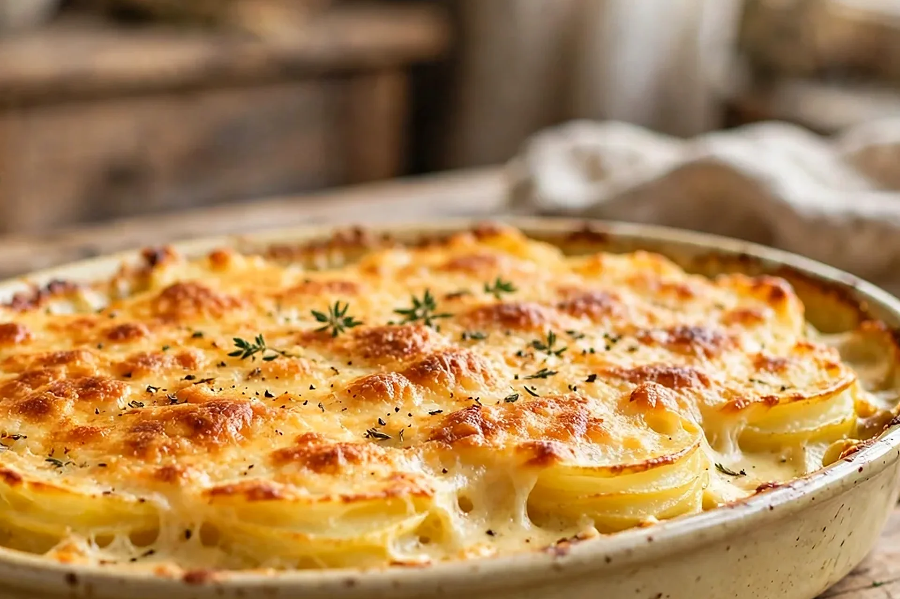

Cremiges Kartoffelgratin – der beliebte Ofenklassiker
Ein gutes Kartoffelgratin braucht nicht viele Zutaten – nur feine Kartoffelscheiben, Sahne, einen Hauch Knoblauch und Zeit im Ofen. Bei uns passt es zu fast allem, und als Hauptgericht mit einem Salat macht es genauso glücklich.

Inhaltsverzeichnis
Zutaten
Zubereitung
- Den Backofen auf 180 °C Ober-/Unterhitze vorheizen. Eine Auflaufform mit Butter einfetten und mit der halbierten Knoblauchzehe ausreiben.
- Die Kartoffeln schälen und in ca. 2–3 mm dünne Scheiben schneiden oder hobeln.
- Sahne und Milch in einem Topf erhitzen und kräftig mit Salz, Pfeffer und Muskat würzen.
- Die Kartoffelscheiben fächerförmig in die Form schichten und mit der heißen Sahnemischung übergießen, bis sie fast bedeckt sind.
- Den geriebenen Käse darüberstreuen.
- Das Gratin im Ofen ca. 45–50 Minuten backen, bis die Kartoffeln weich sind und die Oberfläche goldgelb ist. Mit einem Messer prüfen, ob die Scheiben gar sind.
- Vor dem Servieren ca. 10 Minuten ruhen lassen – dann wird das Gratin schön cremig und lässt sich besser portionieren.

Tipp
Gleichmäßig dünne Scheiben sind das Wichtigste: So garen alle Kartoffeln zur gleichen Zeit. Wird die Oberfläche zu schnell braun, einfach mit Alufolie abdecken und weiterbacken.
📌 Mehr Rezept-Ideen findest du auf unserem Pinterest-Profil:
Lecker Rezepte auf Pinterest
Lecker Rezepte auf Pinterest